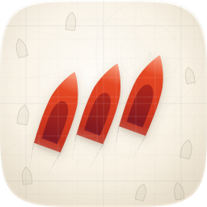
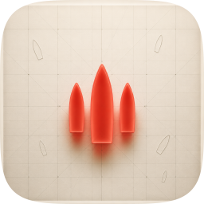
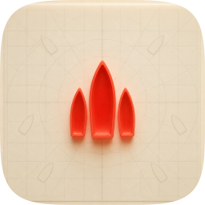
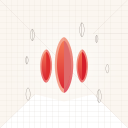
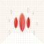

| Take | Renders at 128 / 32 / 16 css px (2× retina sources), plus the 16px squint magnified | Rubric | Verdict |
|---|---|---|---|
| A · icon.svghand-authored layered SVG · SHIPS |
 |
11 / 12 | Three gel hulls in echelon on a course of 020°, over a graticule that bleeds off all four edges. Checks 1–4 verified on real renders, not imagined: the filled-black silhouette is nameable (pointed stem, sustained beam, flat transom, stepped formation), and the 16px squint sheds the cockpit cleanly to three diagonal marks with no smear. Dominant gel measures 4.09:1 against the vellum plate, so #7 holds on value alone. Sole deduction is #2: the focal runs 68.4% of tile width against the 55–65% composition constant, the direct cost of a diagonal composition whose bbox is wide and short (its height is only 49.7%, and margins stay ≥162px). Layers #bg/#mid/#fg/#highlight intact and 1:1 with Icon Composer. |
| C1 · icon-c1.pngGPT Image 2 raster, corpus-referenced · material donor |
 |
9 / 12 | Best material of the set and the reason the master looks the way it does: it discovered that a hollow hull with a raised gunwale and a darker inner well is what makes a plan view read as a vessel rather than a leaf. That was rebuilt into Take A per the pipeline rule. It cannot ship itself: #1 fails on a baked inset plate frame, #3 fails because three symmetric near-vertical tapers set abreast read as flames (no transom, no formation), and #10 fails by construction since a flat raster has no layers to survive Dark/Clear/Tinted. |
| C2 · icon-c2.pngGPT Image 2 raster, second material take |
 |
7 / 12 | Handsome portolan net of rhumb rays and range circles, and that idea was salvaged into the master's chart layer. Everything else loses: the plate sits inset inside a wide cream border (#1), the focal collapses to roughly a third of tile width with the rest given to margin (#2), the same abreast-taper silhouette problem as C1 (#3), and the flat-raster #10 liability. The debossed drafting-board surface also reads previous-era rather than as a Tahoe cushion (#9). |
| B · icon-engineB-arrow.svgArrow 1.1 vector take |
  |
5 / 12 | The miss of the set. The hulls resolved as symmetric lenses with neither stem nor transom, so #3 fails outright: at any size they read as seeds. Set abreast rather than in formation, on a flat field with no cushion (#1, #9), lit by a vertical split gradient that implies no source (#5), and a stray white wedge bleeds across the lower third and z-fights the ground (#8). Structurally layered, so #10 would have passed had anything else. Nothing was salvaged. Kept on the sheet because a variation set that hides its losers is not an audit. |